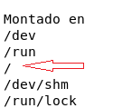

🖥️ Actividad: Monitoreo, Diagnóstico y Automatización Segura
Escenario: Como administrador de sistemas, tienes que controlar la salud del servidor: verificar que no se quede sin disco, monitorear los procesos que consumen recursos y programar tareas automáticas de forma segura sin colapsar el sistema.
Parte 1: Diagnóstico de Almacenamiento en Disco
📋 Paso 1: Inspeccionar el uso general del disco
Ejecuta el comando para ver el estado general del almacenamiento en el sistema:
df -h
✍️
Observá la pantalla y respondé:
- Ubicá la fila que en Montado en dice
/ (la raíz). ¿Qué porcentaje de uso (Uso%) tiene actualmente?
- ¿Cuánto espacio libre (
Disp) le queda al disco del servidor?

📋 Paso 2: Rastrear qué carpeta consume más espacio
Para ver el tamaño de cada carpeta dentro del sitio web sin llenar la pantalla de datos, ejecutá:
du -sh /var/www/html/*
✍️ Analizá la salida:
¿Cuál es la carpeta que más espacio ocupa en este momento? Anotá su tamaño en megabytes o gigabytes (ej: 25M o 2G).
Parte 2: Monitoreo del Servidor en Tiempo Real
📋 Paso 3: Identificar consumo de Procesador (CPU) y Memoria
Ejecutá la herramienta de monitoreo en vivo:
htop
(Si el comando no está disponible, usá top. Para salir de la pantalla presioná la tecla q).
✍️
Responde observando la parte superior:
- ¿Qué porcentaje aproximado de Memoria RAM se está utilizando?
- Ubicá la columna
COMMAND en la lista de abajo: ¿Ves algún proceso relacionado con el servidor web (httpd o apache2)?
Parte 3: Automatización Segura con Cron
⚠️ Regla de Oro de los Resguardos: NUNCA guardes un archivo de respaldo dentro del mismo directorio que estás respaldando. Si lo hacés, el respaldo incluirá los respaldos anteriores y el tamaño crecerá infinitamente hasta llenar el servidor.
📋 Paso 4: Programar una tarea automatizada (Cron)
Vas a programar un comando para que guarde la fecha y hora actual dentro de un archivo de registro en tu directorio personal.
- Abrí el editor de tareas programadas de tu usuario:
crontab -e
- Al final del archivo, agregá la siguiente línea para que se ejecute cada 1 minuto:
* * * * * date >> ~/mi_registro.txt
- Guardá los cambios y salí del editor.
- Esperá un par de minutos y verificá que el archivo se esté llenando automáticamente ejecutando:
cat ~/mi_registro.txt
- Paso final importante: Volvé a entrar con
crontab -e y borrá la línea (o ponele un # adelante) para detener la tarea.